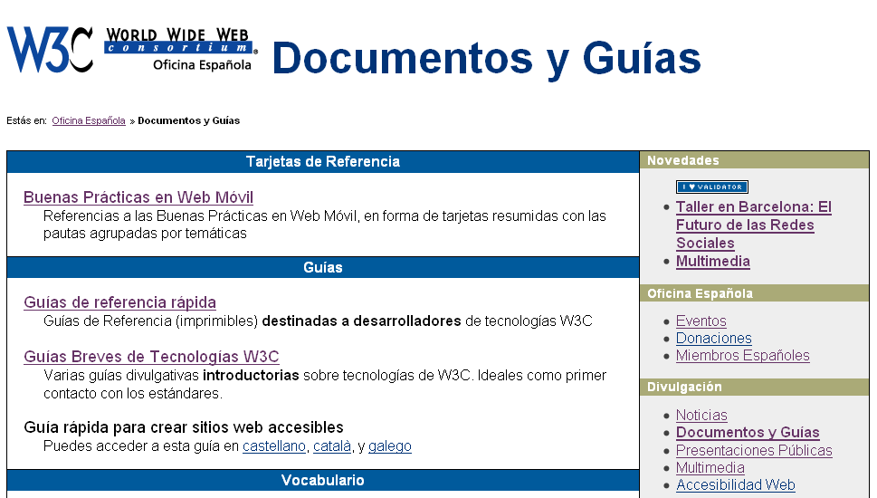
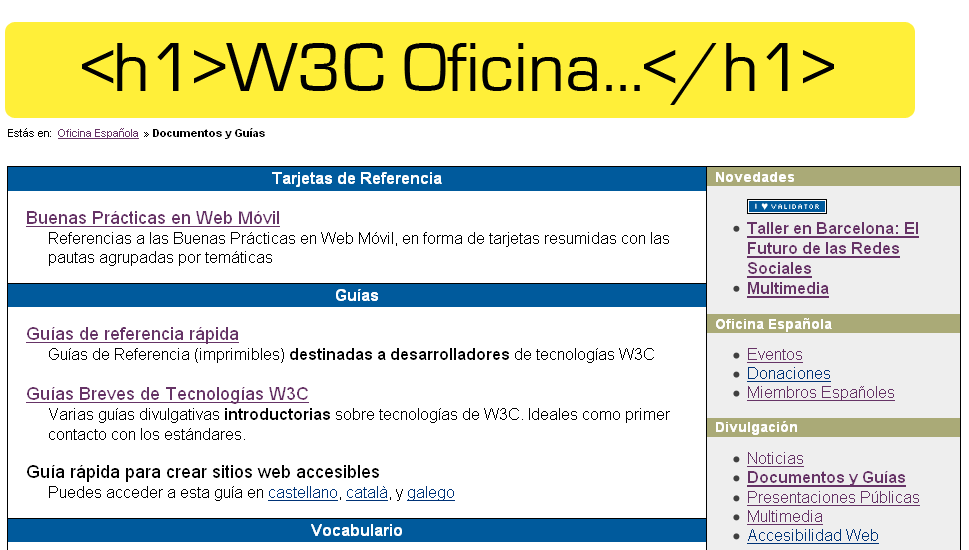
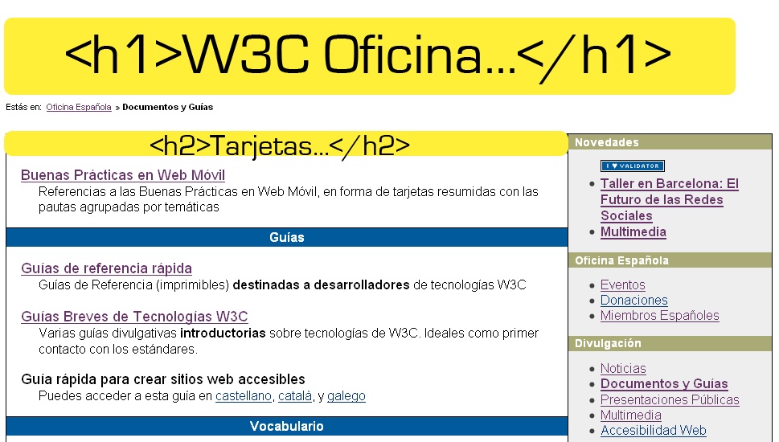
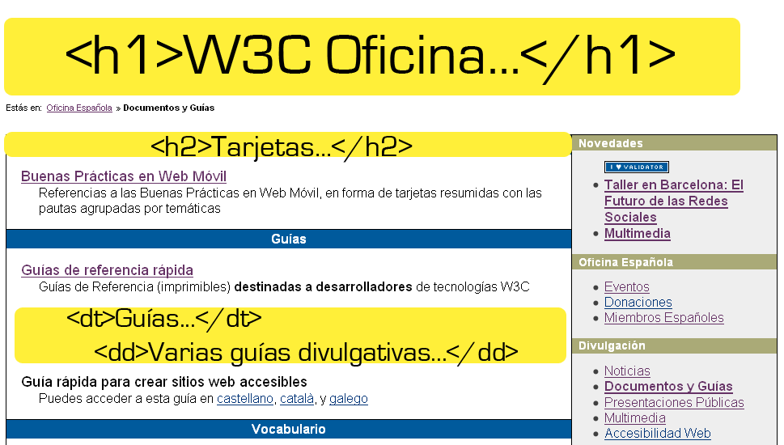
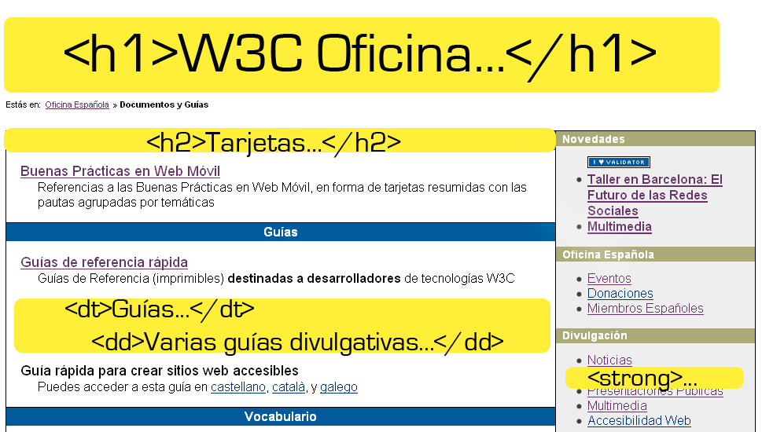
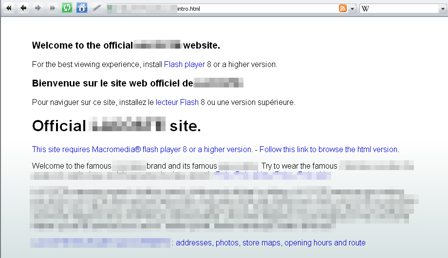
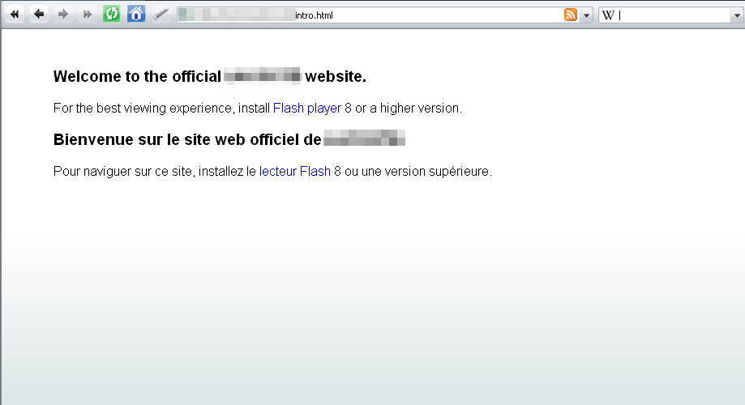

Cooperación con los mejores expertos de la Web - ahorro de consultorías
Compartir inversión I+D: más allá de los recursos de una sola organización
Intercambio de ideas y experiencias
Las mejores especificaciones gracias a una amplia revisión
Libres de derechos
Compartir el coste de las pruebas de desarrollo
Aumento de beneficios
Los estándares abiertos aumentan la innovación y la
competencia
Incremento del crecimiento gracias a la confianza del mercado
Los clientes tienen más confianza - no están sujetos a soluciones propietarias
El proceso de construcción de los estándares
Estándares, los fundamentos de la Web
Expandiéndose desde la Web de documentos (1.0)...
...hasta la Web Única...
de creadores y consumidores (2.0)
de los datos y servicios (3.0)
para todo el mundo
desde cualquier dispositivo
¿Web Única?
...ofrece la misma información y servicios a los usuarios, independientemente de quienes son, donde están, los sistemas que usan o la forma mediante la que se conectan
Una Web para todo el mundo
...acceso universal
Acceso a la información, independientemente de...
...características de los dispositivos de acceso
PCs, teléfonos, TVs, PDAs, dispositivos en
electrodomésticos o en automóviles...
limitación en: ancho de banda, pantalla, colores, sonido...
...discapacidades de los usuarios
distinción de colores, ceguera, ...
dificultades de manejo de teclados, ratón, ...
dislexia, dificultades cognitivas o neurológicas, ...
...diferencias culturales, geográficas o
lingüísticas
sentidos de escritura, diferentes tipos de teclados, ...
formato de fechas, números de teléfono, códigos postales, IDs,...
¿Cómo se consigue esta Universalidad?
Accesibilidad Web
...personas con discapacidades puedan usar la Web
Diseñar para usuarios con discapacidad en un entorno ordinario es igual que diseñar para personas sin discapacidad en entornos
extraordinarios
Ventajas de la Accesibilidad
Acceso de personas con discapacidad y...
mayores
que usan conexiones con escaso ancho de banda
que usan viejos equipos o software obsoleto
novatas en la Web
que usan dispositivos móviles para el acceso a la Web
personas que no manejan fluidamente el idioma del sitio
¿Sólo para personas?
Ventajas para todos/as todo
Información accesible a robots de indexación
Mejora semántica y de estructuración de contenidos
Independencia de dispositivo y multimodalidad
Mejora de la indexación
Información accesible a todos/as todo

Información accesible a todos/as todo

Información accesible a todos/as todo

Información accesible a todos/as todo

Información accesible a todos/as todo

Desde otros dispositivos...
Page has eleven headings and fifty-four linksWthree C Oficina Española dash Documentos y Guías Divulgativas dash Internet ExplorerHeading level oneLinkGraphicLogo oficina española del Wthree C Documentos y Guías Estás en colon
List of one itembulletLink Oficina EspañolaList of one itembullet right double angle bracket
Documentos y GuíasList endList endHeading level two Tarjetas de ReferenciaDefinition list of one itemLink Buenas Prácticas en Web Móvilequals Referencias a las Buenas Prácticas en Web Móvil, en forma de tarjetas resumidas con las pautas agrupadas por temáticasList endHeading level two GuíasDefinition list of three itemsLink Guías de referencia rápidaequals Guías de Referencia left paren imprimibles right paren destinadas a desarrolladores
de tecnologías Wthree CLink Guías Breves de Tecnologías Wthree Cequals [...]
Página de la Oficina W3C España a través de Fangs (screen reader emulator)
No siempre se puede acceder a esa información

Sin Javascript
No siempre se puede acceder a esa información

Con Javascript /Sin Flash
Estándares del W3C para la Accesibilidad
(WAI)
WCAG (Pautas de Accesibilidad para Contenido Web)
WAI-ARIA (Accesibilidad en Aplicaciones Enriquecidas)


{kind=link}
{kind=link}